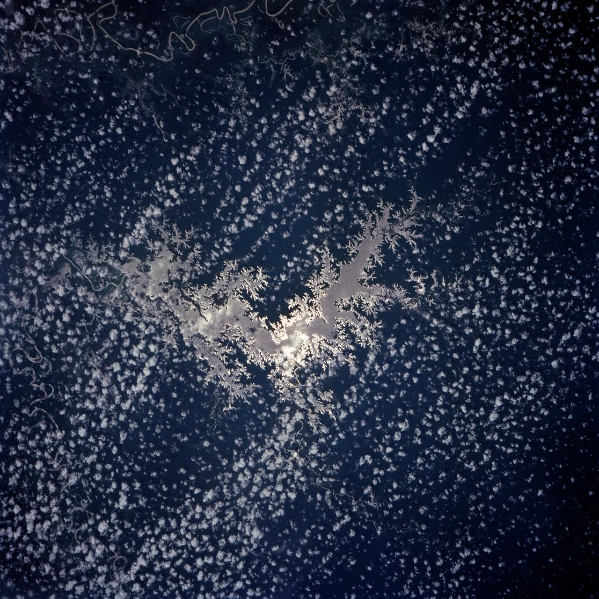
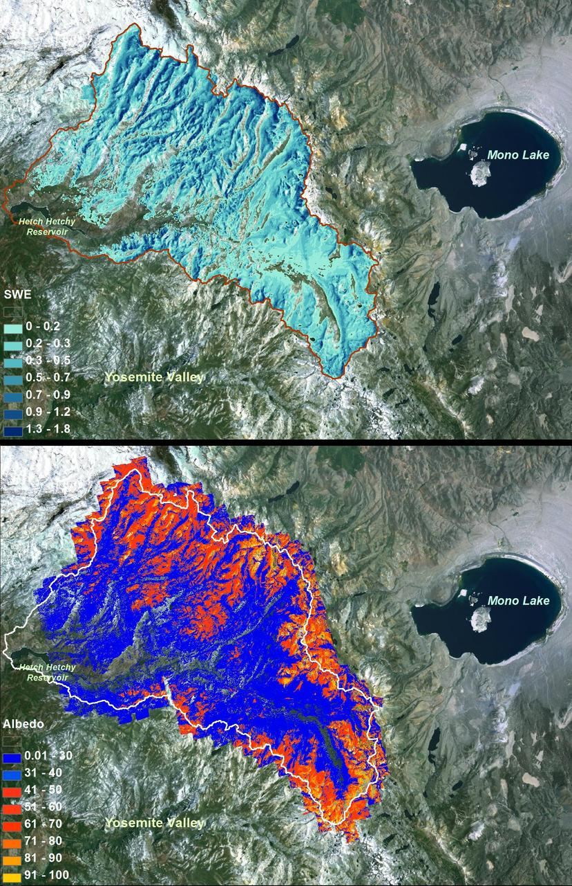
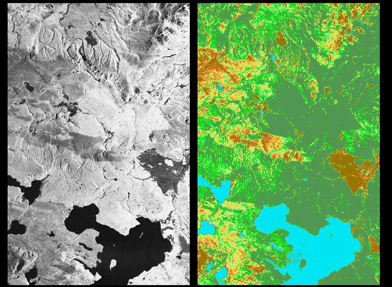
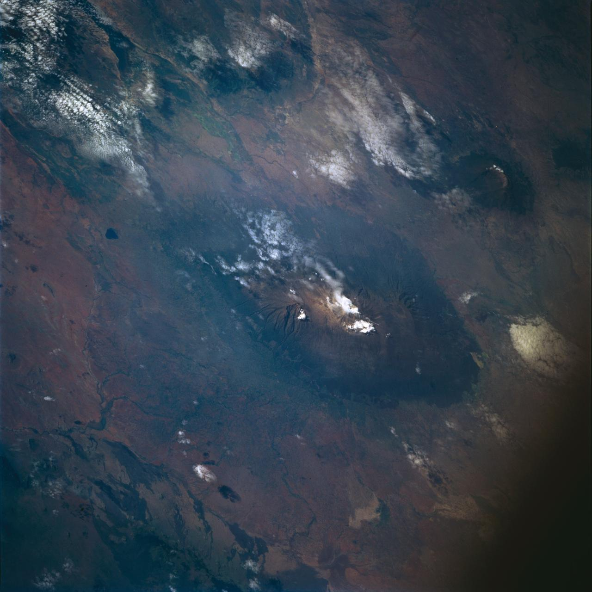
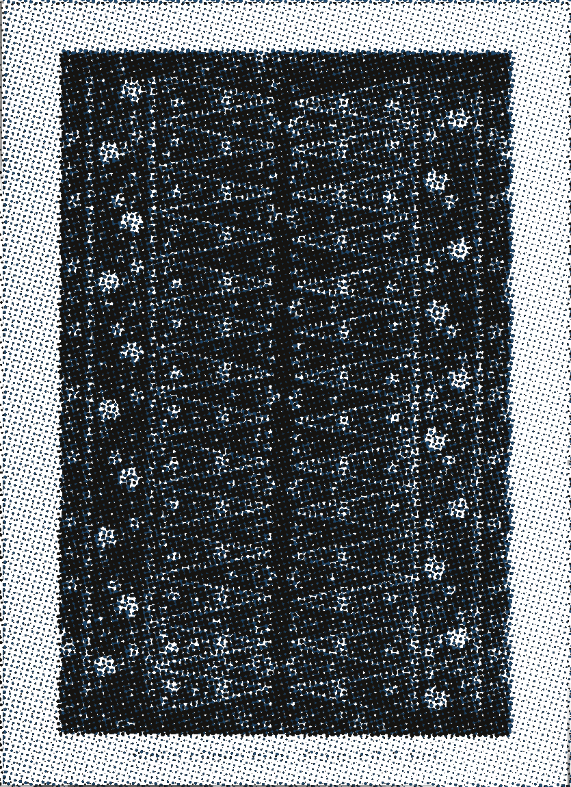

主脉：叶柄到叶尖
曝光 2 min
主脉走 2.5px 实线，从叶柄一直延到叶尖，中途不闭合；每到一个节点就断开 2px，把位置让给孢子形。这一支管输送，不管分类，所以它自己不挂在任何一级分类下。
CR-MV-0221/1 二级脉 47 条里的第 1 支 · 线宽 2.5px · 节点缺口 2px
标本 CR-MV-0221 采样 蒙特维德云雾林 10.30N 84.79W
二级脉 47 条 · 已标 12 条 · 曝光 8 min
状态 VEIN-47 叶脉路径数据缺段 （见页尾错误态）
这片叶子上有 47 条二级脉，我们只标了其中 12 条。
沿这条脉看下去 进站第一个动作是选一支，不是读标题。
CR-MV-0221 当前档位 8 min，状态 VEIN-47。
CR-MV-0221 的参照件：枝叶压平后叶肉最深、脉络留白，右下角有手写学名与编号 7372.0。蓝晒反相在构建期用灰度矩阵生成，不在运行时加滤镜。Musée national d'histoire naturelle Luxembourg · CC BY 4.0 · Wikimedia Commons8 栏加一条中轴，中轴落在第 4 栏与第 5 栏之间；同一层的两支按 5:3 分栏，较窄的一支下沉 3 个基线（24px），因为真实叶脉两侧从来不对称。支与支之间留 64px，层与层之间留 96px，末端叶之间只留 24px。基础 8px，最多 4 层，第 4 层只能挂末端叶。
CR-MV-0221/1。曝光 2 min
主脉走 2.5px 实线，从叶柄一直延到叶尖，中途不闭合；每到一个节点就断开 2px，把位置让给孢子形。这一支管输送，不管分类，所以它自己不挂在任何一级分类下。
CR-MV-0221/1 二级脉 47 条里的第 1 支 · 线宽 2.5px · 节点缺口 2px
曝光 4 min
右支比左支窄 3 栏，整支下沉 24px。蒙特维德云雾林那一片叶子在这一层分成两支：一支朝叶缘走，一支折回来找主脉。河盆影像里的枝状分叉和它是同一套算法，只是尺度差了六个数量级。

曝光 8 min
线宽掉到 1px。这一层的分叉在中轴两侧各伸出 2 栏，每深一层加一档曝光，纸面比上一层沉一档，档与档之间还是那条 1px 的未曝光纸白。
CR-MV-0221/4 第 2 层左支 · 线宽 1px
曝光 16 min
同一层里较宽的这一支，往下再分三支，0.6px 与 0.4px 的两级都在这里出现。融雪图上的支流边界和它一样：越深的分支在纸上晒得越久，色阶越沉。

曝光 32 min
左侧一半是雷达灰度、右侧一半是假彩色，同一块地面印两次。第四层只挂末端叶，末端叶之间只留 24px，它们挤在一起。

曝光 64 min
最深一档 #0A1116 是真正晒了 64 分钟的边角，正文用它，对纸底 16.08:1。这一支只剩 0.4px 的末梢线，节点缺口还是 2px。

第 3 层那一支在这里收尾，线宽 0.4px，是页面上最细的一条。叶柄上那枚 4px 纸白缺口就是它被采集过的记号。
叶子背面压出来的一条支脉，扫描件上叶肉最深、脉络留白，正面看不出来的分叉在这一面全都露出来。
坐标来自 2019 年 4 月的一次采集，叶缘被虫咬掉一角，分叉级数只能靠剩下的一半数，所以它一直停在待核。
这一支还没采集到标本。上一次有人走到这里是 2019 年 4 月。
缺段记录 VEIN-47：只画到 61%，剩下的 39% 没有坐标。
深浅是晒了多久的结果，不是画出来的。六档只由六个 CSS 变量切换，档与档之间是硬边跳变，页面里没有一处插值过渡。
2 分钟4 分钟8 分钟16 分钟32 分钟64 分钟
#5D43AD：晒过头的纸，对纸底 6.18:1，作按钮底时白字 7.22:1。#4A3390；8 分钟 #3A276E。#2A1B50；32 分钟 #1B1136。#0A1116：久晒的边角，对纸底 16.08:1，正文用这一档。8.8 / 9.0 / 8.2 / 7.1 / 7.6 级，全部 ≥6 级；档与档之间只留 1px 未曝光的纸白，不画描边、不加发光、不去模糊。CR-MV-0221 这样。
叶脉路径数据缺段（错误码 VEIN-47）：第 12 支二级脉只画到 61% 就停了，剩下 39% 没有坐标。
47 条二级脉里有 12 条进了标本板。缺的这一支编号 CR-MV-0221/12，缺段长度 14.6mm，位置在距叶柄 38mm 处。缺段不影响已经标好的 11 支：它们的线宽 1px / 0.6px / 0.4px 与节点缺口 2px 全部按原值保留。
上一帧停在 61 / 100：叶脉小图、孢子节点与 64 分钟曝光区都还能读，缺的那一段在图上是一截空的。
缺段还没回填。下一次采集窗口在 2019 年 4 月那一场雨之后，错误码 VEIN-47 的记录会一直挂在这里。
cubic-bezier(0.2,0.7,0.1,1)，末端 4% 过冲后回位。画的是描边长度，不是遮罩。光标图样：20 × 20px，尖端 2px，热点在尖端。
减少动态时的再发明（prefers-reduced-motion: reduce）：逐级生长停止推进，但分叉机制完整静态保留——4 层路径、5:3 的左右宽度比、下沉 24px、孢子节点的 3 至 5 叶不规则形状、主脉 2.5px 与支脉 1px 的粗细差全部按原值呈现，只把过渡压到 120ms 的不透明度切换，展开改由点击触发。
窄屏那一套也照旧：分支角固定 42°（横走 28px、抬升 26px），4 层深度沿中轴每层缩进 28px，末端叶仍只挂最深一层。
| 宽度 | 分叉怎么留 |
|---|---|
| ≥1440px | 完整 4 层，同时看到 2 条路径；8 栏加中轴、5:3 分栏、下沉 24px 全部展开。 |
| 1024–1439px | 显示 3 层；第 4 层折成一次露出 1.6 张的横向轨道，单张宽 62.5%，可以横向拖。 |
| 768–1023px | 只显示当前选中的那一条路径，用叶脉小图做回溯导航；切换按钮高 44px，另外那一条的线不会消失，只是折在第二条上。 |
| <768px | 转单栏，分叉机制完整保留为沿中轴左右交替的上下分支：分支角固定 42°，主脉 2.5px、支脉 1px 的粗细差与不规则孢子形全部保留，4 层深度转为沿中轴的垂直递进、每层缩进 28px，末端叶仍只挂最深一层。 |
42° 是算出来的，不是估的：桌面档支线横走 56px、抬升 50px，窄屏横走 28px、抬升 26px，atan(50/56) = 41.8°。线宽走 vector-effect: non-scaling-stroke，所以缩放窗口时 2.5px 还是 2.5px。